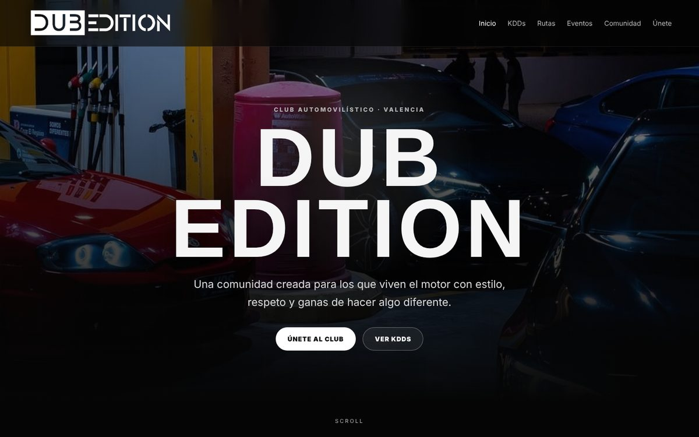

Webs y e-commerce
Webs corporativas, landing pages y tiendas online que el cliente puede gestionar por su cuenta.
WordPress, PrestaShop, Shopify, HTML, CSS, PHP, MySQL, GitHub Pages
Hago webs y tiendas online, mantengo los sistemas en marcha y dirijo el marketing digital. Uno las tres cosas para que una empresa venda más y funcione mejor.
Trabajo real: webs publicadas, software en desarrollo y procesos que hoy funcionan solos.
Web de un club automovilístico de Valencia: KDDs, rutas, eventos, comunidad y formulario de alta. SEO técnico, analítica con GA4 y Tag Manager, dominio propio.
Ver la web de Dub Edition (se abre en otra pestaña)
Software de gestión para escuelas infantiles. Centros, aulas, alumnado, familias, asistencia, menús, comunicados y facturación en una sola plataforma. En desarrollo.
Webs, redes sociales y marca de Lápices Escuela Infantil, NeoKids Piscina, NeoKids English Club y Madagaspark. Dirección de un equipo de 8 personas y campañas con marcas colaboradoras.
Cada noche se revisan 8 buzones de correo, se detectan las facturas, se clasifican por empresa y CIF y se archivan en el NAS. Administración recibe un informe cada mañana.
Fibra y 4G con un router TP-Link ER605: si cae la línea principal, el centro sigue con internet y TPV sin que nadie toque nada. Incluye un manual de emergencias de red.
Configuración de Zoho CRM con funciones propias en Deluge para conectar lo que pide el negocio con lo que hace el sistema.
Cuatro áreas que normalmente lleva gente distinta. Yo las conecto.
Webs corporativas, landing pages y tiendas online que el cliente puede gestionar por su cuenta.
WordPress, PrestaShop, Shopify, HTML, CSS, PHP, MySQL, GitHub Pages
Redes, servidores, equipos y soporte para que el trabajo diario no se pare.
Windows Server, Linux, redes, helpdesk, escritorio remoto
Marca, campañas y redes sociales con objetivos que se pueden medir.
Meta Ads, Google Ads, social media, branding, CRM, analítica
Tareas repetitivas convertidas en procesos que funcionan solos, y prototipos rápidos con IA generativa.
IA generativa, Python, C#, automatización de correo y documentos
De reparar equipos a dirigir la tecnología y el marketing de un grupo de empresas.
a hoy
Salzaebso, sector educativo. Valencia
a
Infonegoci, equipos informáticos. Torrent
2021 a 2023
Coordinación de eventos y activaciones para Monster Energy y Coca-Cola. Atención al cliente, stock y pedidos online en Zara (Inditex). También Gilanfrut, Kaptive Energy, 4 Estaciones y S&C.
Empecé reparando ordenadores y montando redes en Torrent. Hoy llevo la tecnología y el marketing de un grupo con escuelas infantiles, piscina, academia de inglés y parque infantil.
Me muevo cómodo entre el servidor y la reunión de dirección: entiendo lo que necesita el negocio y sé cómo construirlo. Me gusta resolver problemas, organizar equipos y ver resultados medibles.
Una web nueva, una tienda online, una red que no falle o una campaña que funcione. Escríbeme y lo vemos.